On this Okinawa soba journey, while visiting Navy Underground Headquarters Park, I went to "Nagadoya" in Nagado, Tomigusuku City 🍜 I ate here in May 2025 😄
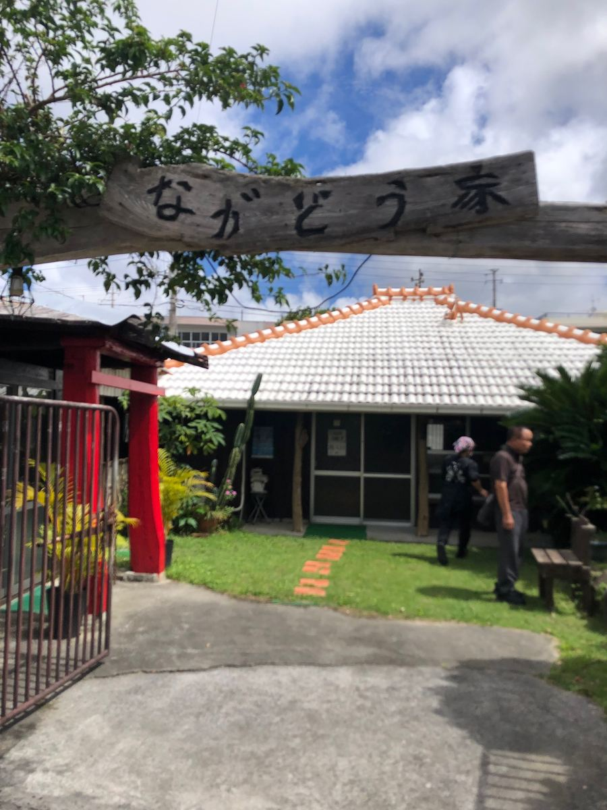

A traditional Ryukyuan old house is used as the shop just as it is 😊 With a red-tile roof, a well-tended garden, and an approach lined with stepping stones, it feels less like coming to an Okinawa soba shop and more like visiting a relative's house in the countryside.
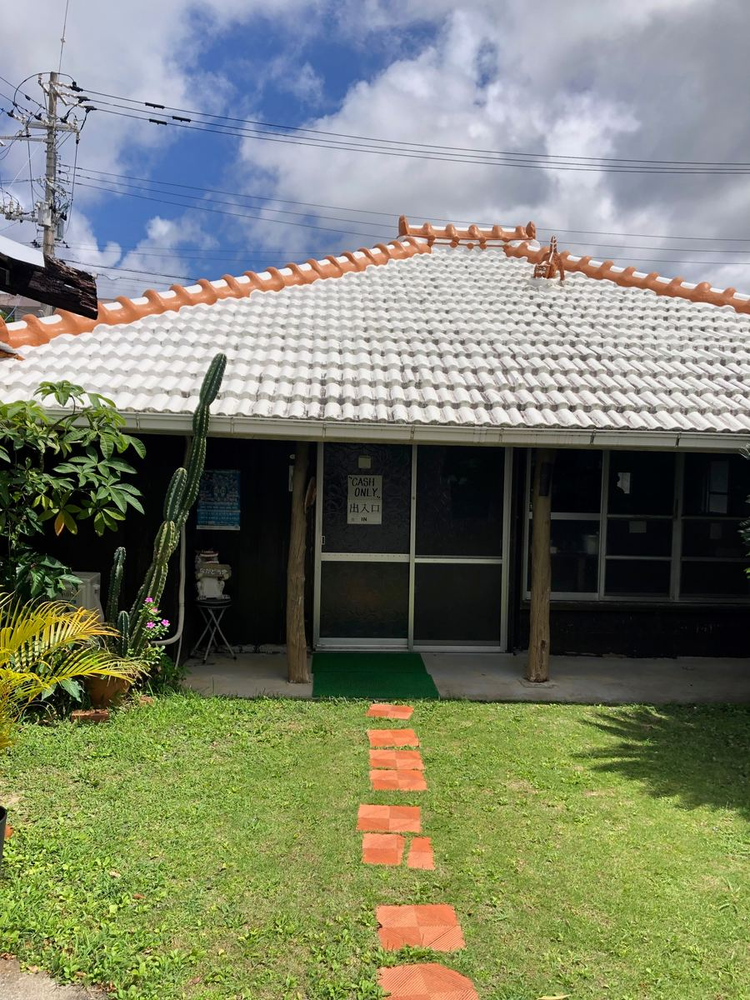
On the wall is a handwritten notice. It says they're open 10:30 to 15:00 and closed on Tuesdays and Wednesdays. The parking lot is behind the building 🚗
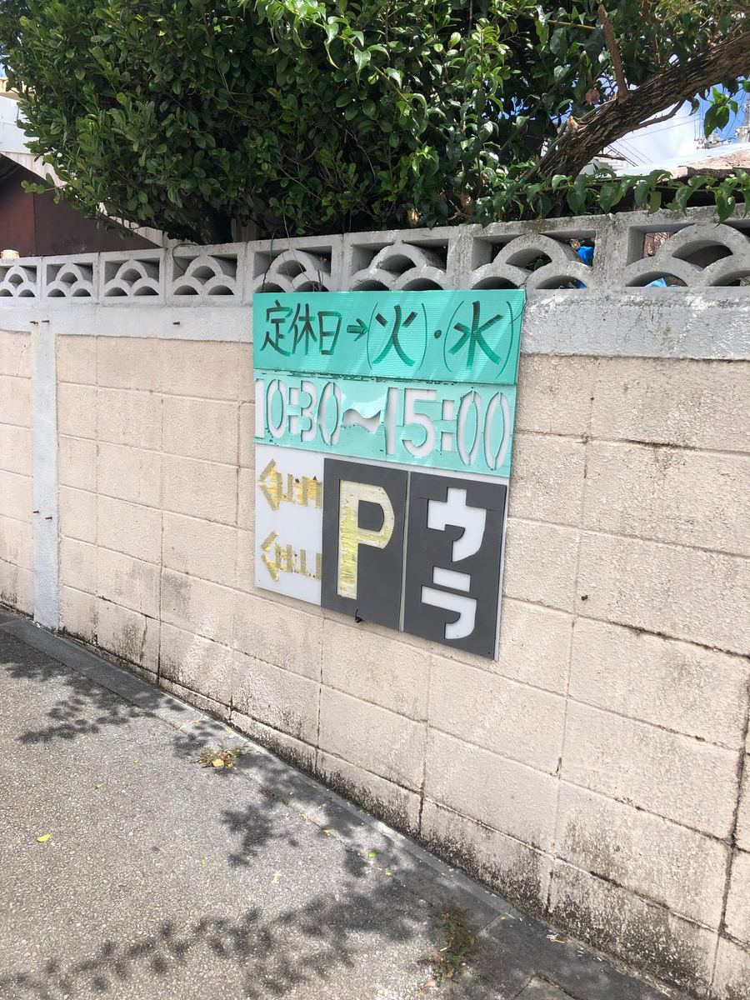
Inside, low tables are lined up in a tatami room, and a relaxing air flows as if I'd come to visit grandma's house 😆 Old furnishings such as old family photos and a dressing table are displayed, making it a deeply atmospheric space.
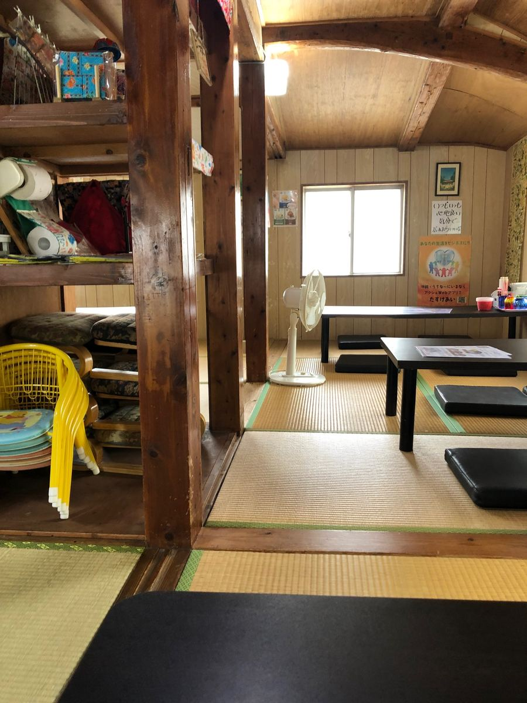
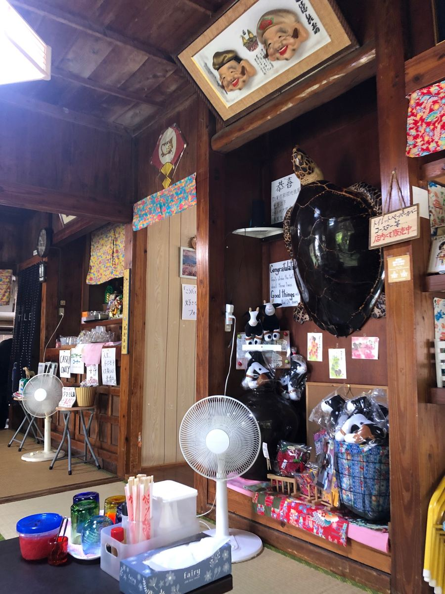
Now looking at the menu, the one labeled as the shop's recommendation is the signature "Nagadoya Soba" at ¥1,000. It's a luxurious bowl with all three kinds of meat on top: braised pork belly (sanmai-niku), soki, and nankotsu (soft bone) 😆 I ordered this without hesitation.
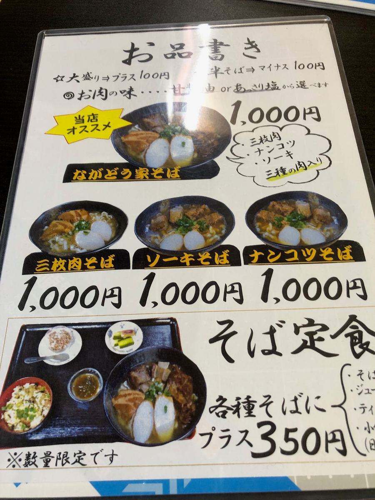
There are also quite a lot of other menu items, such as Uchinaa-don, taco rice, curry soba, yushi-dofu soba, and limited-quantity bean sprout and beef soba. For an additional ¥350 on any soba, it seems you can also make it a "soba set meal" that comes with jushi and a small side dish 😋
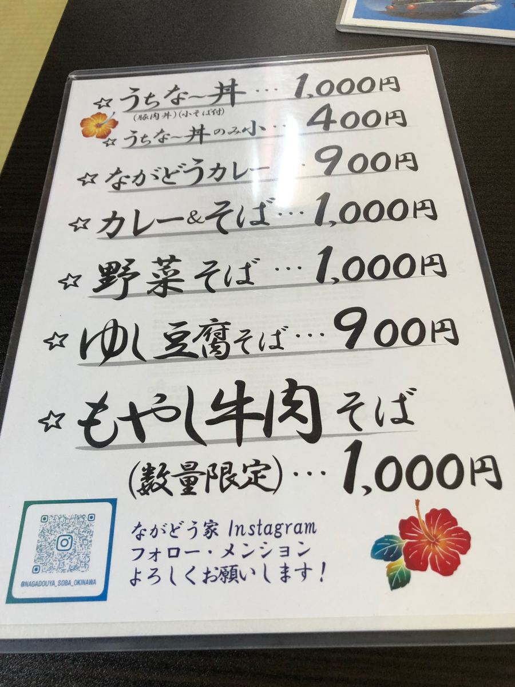
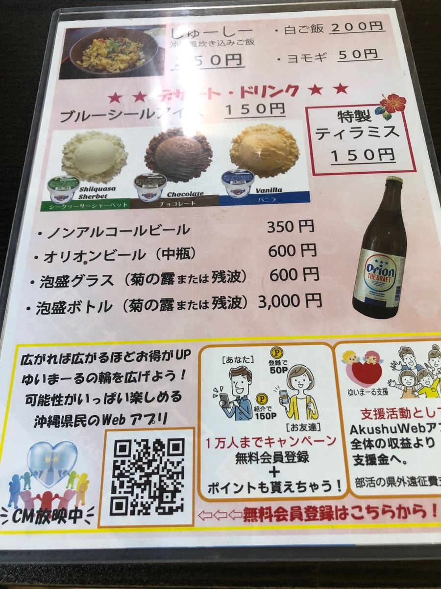
There's also a "Kids' Soba" for ¥300 (for elementary school sixth grade and under), a shop that's friendly to families too 👨👩👧
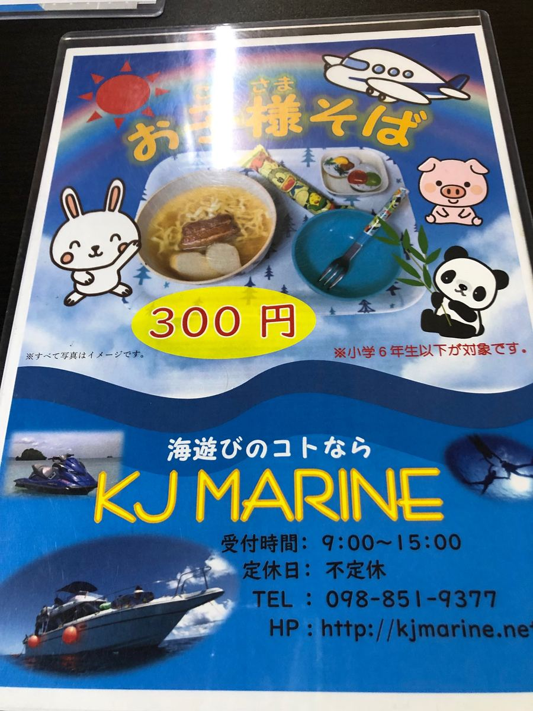
And what I found interesting was the line written on the menu: "Meat flavor... you can choose from sweet soy sauce or light salt." Shops where you can choose the meat seasoning are hard to find elsewhere 😄 I couldn't decide, so I asked the staff member, and they recommended the sweet soy sauce, so I obediently asked for that.
After a while, the "Nagadoya Soba" appeared! In a black bowl, braised pork belly (sanmai-niku), soki, and nankotsu are piled up, and the green of the green onions stands out ✨
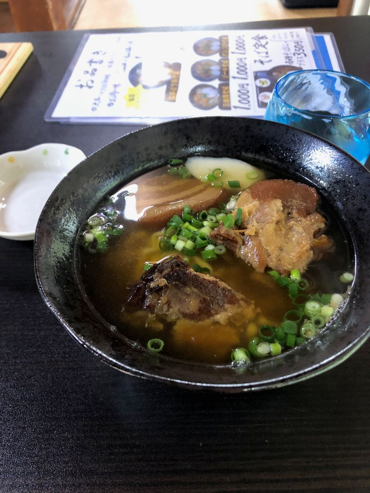
First, the soup. Mm, the bonito broth is strong and delicious 👍 This is high-level.
Next, the noodles. They're medium-thick wavy noodles, and their chewy texture is delicious 😋 It's a bowl that's highly satisfying even with just the noodles.
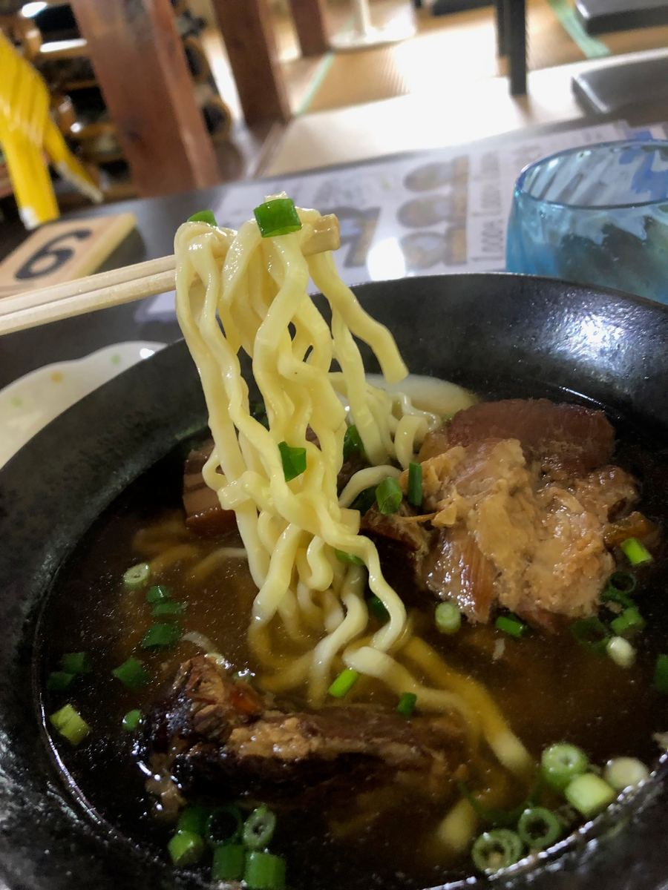
And the three kinds of meat. The sweet soy sauce seasoning is more robust than I'd imagined, with the flavor soaked in deeply. I could also taste the sweetness of brown sugar, which is distinctive in its own way.
However, the braised pork belly, soki, and nankotsu all had a fair amount of sinewy texture ^^; It's a signature menu where you can taste three kinds of meat, so I thought this was a bit of a waste.
That said, the level of the soup and noodles is truly high. A bowl enjoyed in an old house with the atmosphere of coming to grandma's house is special in itself 😄 When you visit Navy Underground Headquarters Park, why not stop by as a set? 👋
Rating (10/15): The soup with strong bonito broth and the chewy medium-thick wavy noodles are of unquestionable level. Being able to choose the meat seasoning from sweet soy sauce or light salt is interesting too. As long as the sinewy texture of the meat doesn't bother you, I think it's a bowl that would rank quite high 😊
Noodles: ★★★✬☆（3.5）
Soup: ★★★✬☆（3.5）
Toppings: ★★★☆☆（3）